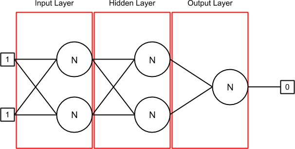

I'm having trouble understanding the backpropagation algorithm. I read a lot
and searched a lot but I can't understand why my Neural Network don't work. I
want to confirm that I'm doing every part the right way.
Here is my Neural Network when it is initialize and when the first line of
inputs [1, 1] and the output [0] is set (as you can see, I'm trying to do the
XOR Neural Network) :

I have 3 layers : input, hidden and output. The first layer (input) and the
hidden layer contains 2 neurons in which there is 2 synapses each. The last
layer (output) contains one neuron with 2 synapses too.
A synapse contains a weight and it’s previous delta (at the beginning, it is
0). The output connected to the synapse can be found with the sourceNeuron
associated with the synapse or in the inputs array if there is no sourceNeuron
(like in the input layer).
The class Layer.java contains a list of neurons. In my
NeuralNetwork.java , I initialize the Neural Network then I loop in my
training set. In each iteration, I replace the inputs and the output values
and call train on my BackPropagation Algorithm and the algorithm run certain
number of time (epoch of 1000 times for now) for the current set.
The activation fonction I use is the sigmoid.
Training set AND validation set is (input1, input2, output):
Here is my Neuron.java implementation:
public class Neuron {
private IActivation activation;
private ArrayList<Synapse> synapses; // Inputs
private double output; // Output
private double errorToPropagate;
public Neuron(IActivation activation) {
this.activation = activation;
this.synapses = new ArrayList<Synapse>();
this.output = 0;
this.errorToPropagate = 0;
}
public void updateOutput(double[] inputs) {
double sumWeights = this.calculateSumWeights(inputs);
this.output = this.activation.activate(sumWeights);
}
public double calculateSumWeights(double[] inputs) {
double sumWeights = 0;
int index = 0;
for (Synapse synapse : this.getSynapses()) {
if (inputs != null) {
sumWeights += synapse.getWeight() * inputs[index];
} else {
sumWeights += synapse.getWeight() * synapse.getSourceNeuron().getOutput();
}
index++;
}
return sumWeights;
}
public double getDerivative() {
return this.activation.derivative(this.output);
}
[...]
}
The Synapse.java contains:
public Synapse(Neuron sourceNeuron) {
this.sourceNeuron = sourceNeuron;
Random r = new Random();
this.weight = (-0.5) + (0.5 - (-0.5)) * r.nextDouble();
this.delta = 0;
}
[... getter and setter ...]
The train method in my class BackpropagationStrategy.java run a while
loop and stop after 1000 times (epoch) with one line of the training set. It
looks like this:
this.forwardPropagation(neuralNetwork, inputs);
this.backwardPropagation(neuralNetwork, expectedOutput);
this.updateWeights(neuralNetwork);
Here is all the implementation of the methods above (learningRate = 0.45 and
momentum = 0.9):
public void forwardPropagation(NeuralNetwork neuralNetwork, double[] inputs) {
for (Layer layer : neuralNetwork.getLayers()) {
for (Neuron neuron : layer.getNeurons()) {
if (layer.isInput()) {
neuron.updateOutput(inputs);
} else {
neuron.updateOutput(null);
}
}
}
}
public void backwardPropagation(NeuralNetwork neuralNetwork, double realOutput) {
Layer lastLayer = null;
// Loop à travers les hidden layers et le output layer uniquement
ArrayList<Layer> layers = neuralNetwork.getLayers();
for (int i = layers.size() - 1; i > 0; i--) {
Layer layer = layers.get(i);
for (Neuron neuron : layer.getNeurons()) {
double errorToPropagate = neuron.getDerivative();
// Output layer
if (layer.isOutput()) {
errorToPropagate *= (realOutput - neuron.getOutput());
}
// Hidden layers
else {
double sumFromLastLayer = 0;
for (Neuron lastLayerNeuron : lastLayer.getNeurons()) {
for (Synapse synapse : lastLayerNeuron.getSynapses()) {
if (synapse.getSourceNeuron() == neuron) {
sumFromLastLayer += (synapse.getWeight() * lastLayerNeuron.getErrorToPropagate());
break;
}
}
}
errorToPropagate *= sumFromLastLayer;
}
neuron.setErrorToPropagate(errorToPropagate);
}
lastLayer = layer;
}
}
public void updateWeights(NeuralNetwork neuralNetwork) {
for (int i = neuralNetwork.getLayers().size() - 1; i > 0; i--) {
Layer layer = neuralNetwork.getLayers().get(i);
for (Neuron neuron : layer.getNeurons()) {
for (Synapse synapse : neuron.getSynapses()) {
double delta = this.learningRate * neuron.getError() * synapse.getSourceNeuron().getOutput();
synapse.setWeight(synapse.getWeight() + delta + this.momentum * synapse.getDelta());
synapse.setDelta(delta);
}
}
}
}
For the validation set, I only run this:
this.forwardPropagation(neuralNetwork, inputs);
And then check the output of the neuron in my output layer.
Did I do something wrong? Need some explanations...
Here are my results after 1000 epoch:
Real: 0.0
Current: 0.025012156926937503
Real: 1.0
Current: 0.022566830709341495
Real: 1.0
Current: 0.02768416343491415
Real: 0.0
Current: 0.024903432706154027
Why the synapses in the input layer are not updated? Everywhere it is written
to only update the hidden and output layers.
Like you can see, it is totally wrong! It doesn't go to the 1.0 only to the
first train set output (0.0).
UPDATE 1
Here is one iteration over the network with this set: [1.0,1.0,0.0]. Here is
the result for the forward propagation method:
=== Input Layer
== Neuron #1
= Synapse #1
Weight: -0.19283583155573614
Input: 1.0
= Synapse #2
Weight: 0.04023817185601586
Input: 1.0
Sum: -0.15259765969972028
Output: 0.461924442180935
== Neuron #2
= Synapse #1
Weight: -0.3281099260608612
Input: 1.0
= Synapse #2
Weight: -0.4388250065958519
Input: 1.0
Sum: -0.7669349326567131
Output: 0.31714251453174147
=== Hidden Layer
== Neuron #1
= Synapse #1
Weight: 0.16703288052854093
Input: 0.461924442180935
= Synapse #2
Weight: 0.31683996162148054
Input: 0.31714251453174147
Sum: 0.17763999229679783
Output: 0.5442935820534444
== Neuron #2
= Synapse #1
Weight: -0.45330313978424686
Input: 0.461924442180935
= Synapse #2
Weight: 0.3287014377113835
Input: 0.31714251453174147
Sum: -0.10514659949771789
Output: 0.47373754172497556
=== Output Layer
== Neuron #1
= Synapse #1
Weight: 0.08643751629154495
Input: 0.5442935820534444
= Synapse #2
Weight: -0.29715579267218695
Input: 0.47373754172497556
Sum: -0.09372646936373039
Output: 0.47658552081912403
Update 2
I probably have a bias problem. I will look into it with the help of this
answer: Role of Bias in Neural Networks. It doesn't shift back at the next
dataset so...
Answer
I finally found the problem. For the XOR, I didn't need any bias and it was
converging to the expected values. I got exactly the output when you round the
final output. What was needed is to train then validate, then train again
until the Neural Network is satisfaying. I was training each set until
satisfaction but not the WHOLE set again and again.
// Initialize the Neural Network
algorithm.initialize(this.numberOfInputs);
int index = 0;
double errorRate = 0;
// Loop until satisfaction or after some iterations
do {
// Train the Neural Network
algorithm.train(this.trainingDataSets, this.numberOfInputs);
// Validate the Neural Network and return the error rate
errorRate = algorithm.run(this.validationDataSets, this.numberOfInputs);
index++;
} while (errorRate > minErrorRate && index < numberOfTrainValidateIteration);
With the real datas, I need a bias because the outputs started to diverge.
Here is how I added the bias:
In Neuron.java class, I added a bias synapse with a weight and an output
of 1.0. I sum it with all the other synapses then put it in my activation
function.
public class Neuron implements Serializable {
[...]
private Synapse bias;
public Neuron(IActivation activation) {
[...]
this.bias = new Synapse(this);
this.bias.setWeight(0.5); // Set initial weight OR keep the random number already set
}
public void updateOutput(double[] inputs) {
double sumWeights = this.calculateSumWeights(inputs);
this.output = this.activation.activate(sumWeights + this.bias.getWeight() * 1.0);
}
[...]
In BackPropagationStrategy.java , I change the weight and the delta of
each bias in the updateWeights method that I renamed updateWeightsAndBias.
public class BackPropagationStrategy implements IStrategy, Serializable {
[...]
public void updateWeightsAndBias(NeuralNetwork neuralNetwork, double[] inputs) {
for (int i = neuralNetwork.getLayers().size() - 1; i >= 0; i--) {
Layer layer = neuralNetwork.getLayers().get(i);
for (Neuron neuron : layer.getNeurons()) {
[...]
Synapse bias = neuron.getBias();
double delta = learning * 1.0;
bias.setWeight(bias.getWeight() + delta + this.momentum * bias.getDelta());
bias.setDelta(delta);
}
}
}
[...]
With the real datas, the Network is converging. It is now a pruning job to
find the perfect variables combo (if it is possible) of learning rate,
momentum, error rate, quantity of neurons, quantity of hidden layers, etc.